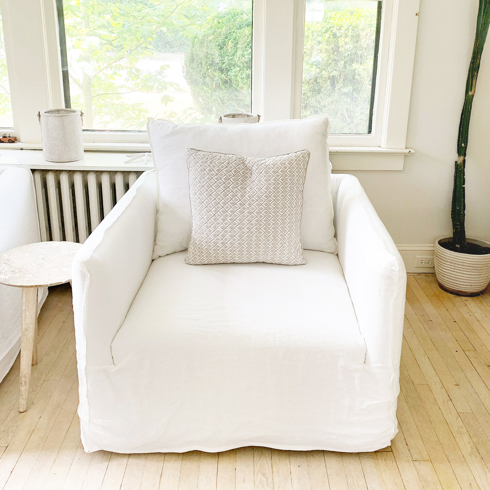
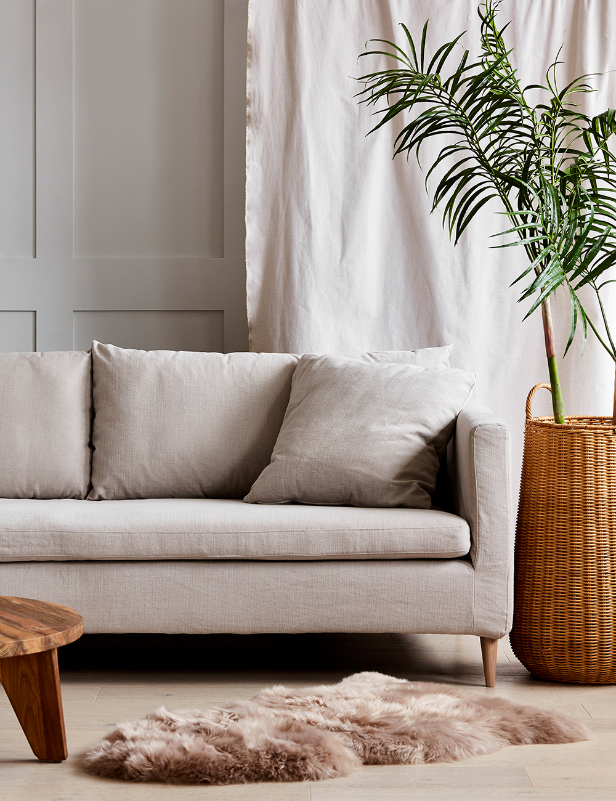
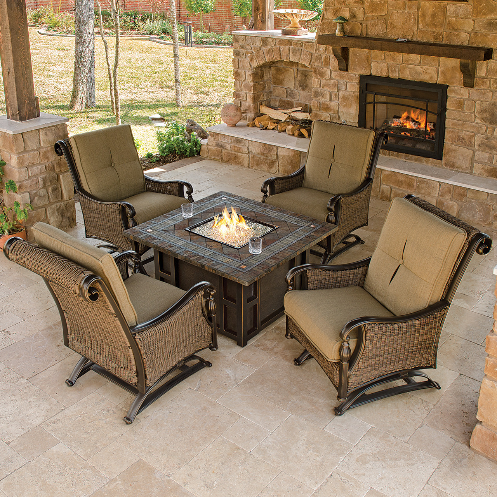

While linen upholstery fabric is easy to care for, shrinkage can occur. However, the good news is that it’s easy to avoid. When caring for your slipcovers, place the slipcover back on when it is damp. Avoid using high heat when washing or drying your slipcover as well. Do this, and your slipcovers will remain a staple of your decor for years to come.

0 800 456 80 80
Support 24/7


Select by Category
Linen
Why Linen Furniture?
FABRIC SHRINKAGE
LIFESPAN
Linen fabric is very durable. That’s due to the strong natural flax fibers used to construct it. Linen also ages well, and in fact, gets softer even after it is cleaned repeatedly. While other fabrics show wear and tear after multiple uses, this isn’t the case with linen.
WRINKLE MANAGEMENT
Linen has a reputation for wrinkling easily, especially after being washed. The good news is, combating wrinkles is pretty easy when it comes to linen upholstery. If linens are pre-washed, you can place them in the dryer on low heat to help remove some wrinkles. However, make sure you remove the linens while they are still somewhat damp. You can also turn your iron to its low to medium-hot setting and iron the linen upholstery fabric while it is still damp. Another alternative is placing a dampened towel over top the piece of linen before ironing.
IMPACT ON THE ENVIRONMENT
Linen is extremely sustainable - more so than most fabrics. And today, many consumers are looking for sustainable products. When growing flax, very little water is required. Therefore, farmers do not need to irrigate or fertilize during this process. Flax typically requires fewer pesticides, herbicides, and fungicides as well. Even once a flax plant is harvested, very little is wasted. Its seeds, for example, can be used to produce oil or can be eaten as a food source. Even when the upholstery is no longer needed, it is biodegradable.
Check Out Our Linen Products

Linen Bedrooms

Linen Sofas

Linen Livingrooms

Linen Terraces
Looking for expert guidance to design your home?
Leave your information here and receive consultation with our interior design experts.